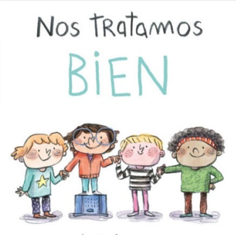
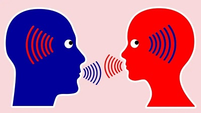
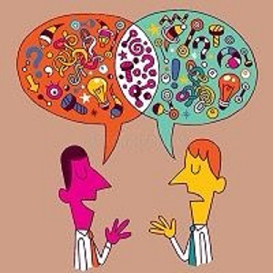
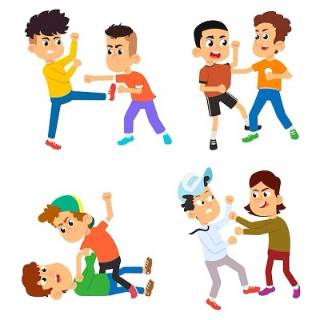
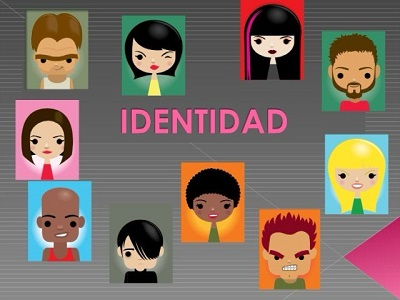
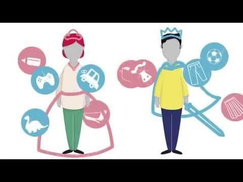
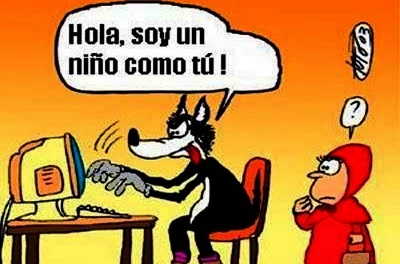

8 Simple principles to build peace in
your community
If you switch on the TV news, open the
newspaper or click onto a popular news
website, there’s always news about a terrorist
attack, war, ongoing conflict and a general lack
of peace amongst different groups of people. In
an increasingly globalised world, we should
understand each other better, stand ever
more united and strive for peace. Sadly, the
truth is quite the opposite. There’s conflict in
Israel/Palestine, Kashmir, Iraq, Afghanistan,
Syria, all over the world in fact…
As individuals and citizens, how do we deal
with this? How does this relate to us? How can
we make positive changes to enable us to live
in peace?
>
8 principios simples para construir la paz en tu comunidad
Si enciende las noticias de la televisión, abre el periódico o hace clic en un sitio web de noticias popular, siempre hay noticias sobre un ataque terrorista, una guerra, un conflicto en curso y una falta general de paz entre diferentes grupos de personas. En un mundo cada vez más globalizado, debemos entendernos mejor, estar cada vez más unidos y luchar por la paz. Lamentablemente, la verdad es todo lo contrario. Hay conflictos en Israel/Palestina, Cachemira, Irak, Afganistán, Siria, de hecho, en todo el mundo... Como individuos y ciudadanos, ¿cómo abordamos esto? ¿Cómo se relaciona esto con nosotros? ¿Cómo podemos hacer cambios positivos que nos permitan vivir en paz?
RULE #1: TREAT OTHERS THE
WAY YOU WISH TO BE
TREATED
The good old Golden Rule says
it all: empathy, tolerance and
peace. This principle teaches
you to love yourself and love
others. It spans cultures and
faiths and is a universal age
old concept which can’t fail!
REGLA #1: TRATA A LOS DEMÁS DE LA MANERA QUE DESEAS QUE TE TRATEN
La vieja regla de oro lo dice todo: empatía, tolerancia y paz. Este principio te enseña a amarte a ti mismo y a amar a los demás. ¡Abarca culturas y religiones y es un concepto universal antiguo que no puede fallar!
PASADO SIMPLE :
He treated others well.
Él trató bien a los demás.
PRESENTE PERFECTO :He has treated others well.
Él ha tratado bien a los demás

RULE #2: LISTEN TO HEAR WHAT OTHERS HAVE
TO SAY, NOT TO SPEAK
Engage in dialogue with an open mind and the
real will to listen to others. Only then will you be able
to understand each other and build bridges. Change
cannot happen and peace cannot be established if
people are unable to communicate with others; to
listen to their experiences and views and show
empathy, understanding and compassion.
REGLA #2: ESCUCHAR LO QUE OTROS TIENEN QUE DECIR, NO PARA HABLAR
Entablar un diálogo con la mente abierta y la voluntad real de escuchar a los demás. Sólo así podréis entenderos y tender puentes. El cambio no puede ocurrir y la paz no puede establecerse si las personas no pueden comunicarse con los demás; escuchar sus experiencias y puntos de vista y mostrar empatía, comprensión y compasión.
PASADO SIMPLE:
She listened to what you had to say.
Ella escuchó lo que tenias que decir.
PRESENTE PERFECTO:
She has tried to listen to what you had to say.
Ella ha tratado de escuchar lo que acabas de decir.

RULE #3: ACCEPT DIFFERENCE OF
OPINION
We all have different opinions and we may not all agree on the same things. Building
compromise and mutual understanding is
incredibly important. Sometimes we
simply need to agree to disagree and
recognise that there are different beliefs
and forms of expression other than our
own.
REGLA #3: ACEPTAR LA DIFERENCIA DE OPINIÓN Todos tenemos opiniones diferentes y puede que no todos estemos de acuerdo en las mismas cosas. Construir compromiso y comprensión mutua es increíblemente importante. A veces simplemente tenemos que estar de acuerdo y reconocer que hay diferentes creencias y formas de expresión que no son las nuestras.
PASADO SIMPLE:
I accept the difference of opinion.
Yo acepte la diferencia de opinión
PRESENTE SIMPLE:I have accepted the difference of opinion.

RULE #4: DO NOT FIGHT VIOLENCE WITH
VIOLENCE
Violence is never the answer. Peace can
only be brought through free will, dialogue,
empathy and forgiveness. Do not stoop to
same level as someone who is violent and
therefore continue the vicious cycle. This
does not change anything.
REGLA #4: NO COMBATIR LA VIOLENCIA CON VIOLENCIA
La violencia nunca es la respuesta. La paz sólo puede lograrse mediante el libre albedrío, el diálogo, la empatía y el perdón. No te rebajes al mismo nivel que alguien que es violento y por lo tanto, continúes el círculo vicioso. Esto no cambia nada.
PASADO SIMPLE REGLA 4:They fought violence with peace.
Ellos combatieron la violencia con paz
PRESENTE PERFECTO: they have fought violence with peace.
Ellos han combatido la violencia en paz.

RULE #5: ACCEPT THAT IDENTITY IS FLUID:
Any one person can have multiple aspects to their
identity. Identity comprises many elements such as
nationality, cultural-linguistic origin, age and religious
beliefs. Identity can and does change, taking on many
new forms and means of personal expression as we
learn new languages, move home, adopt new beliefs,
marry into a different tradition and experience life! Do
not put people into a box. Avoid categorising people
according to an us vs. them narrative and remember:
we are all singular individuals with unique experiences.
Such approaches and narratives are highly divisive and
unproductive.
REGLA #5: ACEPTAR QUE LA IDENTIDAD ES FLUIDA:
Cualquier persona puede tener múltiples aspectos de su identidad. La identidad comprende muchos elementos como la nacionalidad, el origen cultural-lingüístico, la edad y las creencias religiosas. La identidad puede cambiar y de hecho cambia, adoptando muchas formas y medios nuevos de expresión personal a medida que aprendemos nuevos idiomas, nos mudamos a casa, adoptamos nuevas creencias, nos casamos con una tradición diferente y experimentamos la vida. No pongas a la gente en una caja. Evite categorizar a las personas según una narrativa de nosotros versus ellos y recuerde: todos somos individuos singulares con experiencias únicas. Estos enfoques y narrativas son muy divisivos e improductivos.
PASADO SIMPLE:You accepted the identity of others.
Tú aceptaste la identidad de los demás
PRESENTE PERFECTO:You have accepted the identity of others.
Tú has aceptado la identidad de los demás.

RULE #6: AVOID
STEREOTYPES
Take people for the
individuals they are. Avoid
misconceptions, stereotypes
and toxic narratives and get
to know a person instead.
This will avoid offence,
misunderstandings and
ultimately help you to create
a real bond with others based
on true understanding,
empathy and trust. After all,
no one likes to be judged –
especially from the outsid
REGLA #6: EVITE LOS ESTEREOTIPOS
Tome a las personas como las personas que son. Evite conceptos erróneos, estereotipos y narrativas tóxicas y, en su lugar, conozca a una persona. Esto evitará ofensas,malentendidos y, en última instancia, le ayudará a crear un vínculo real con los demás basado en la verdadera comprensión, empatía y confianza. Después de todo, a nadie le gusta que lo juzguen, especialmente desde el exterior.
PASADO SIMPLE:I avoid stereotypes.
Yo evite los estereotipos
PRESENTE PERFECTO:I have avoided stereotypes.
Yo he evitado los estereotipos

RULE #7: APPROACH THE MEDIA
WITH SKEPTICISM
Don’t just believe everything you see
on the TV, in the newspapers or on
the internet. Think objectively for
yourself. Get to know the people and
facts behind any story and don’t fall
for media scapegoating. Stand
united.
REGLA #7: ACÉRQUESE A LOS MEDIOS DE COMUNICACION CON ESCEPTICISMO
No creas todo lo que ves en la televisión, en los periódicos o en Internet. Piensa objetivamente por ti mismo. Conozca a las personas y los hechos detrás de cualquier historia y no se deje engañar por los medios como chivos expiatorios. Manténganse unidos.
PASADO SIMPLE:She researched beyond the media.
PRESENTE PERFECTO: She has researched beyond the media.
Ella ha investigado más allá de los medios de comunicación

RULE #8: BE CAREFUL OF THE LANGUAGE YOU
USE
Your choice of language, alongside tone of voice
and intonation all convey a message. Make sure
that that message is positive. Be mindful of the
language you use, avoiding anything with
misogynistic, racist, Islamophobic, homophobic
or anti-Semitic overtones. Do not underestimate
the power of language – for better or for worse!
And remember, it’s not always what you say,
it’s how you say it.
REGLA #8: TEN CUIDADO CON EL LENGUAJE QUE USAS
Su elección de idioma, junto con el tono de voz y la entonación, transmiten un mensaje. Asegúrese de que ese mensaje sea positivo. Sea consciente del lenguaje que utiliza y evite cualquier tono misógino, racista, islamófobo, homofóbico o antisemita. ¡No subestimes el poder del lenguaje para bien o para mal!
PASADO SIMPLE:He used an appropriate language.
Él uso un lenguaje adecuado
PRESENTE PERFECTO:He has used an appropriate language.